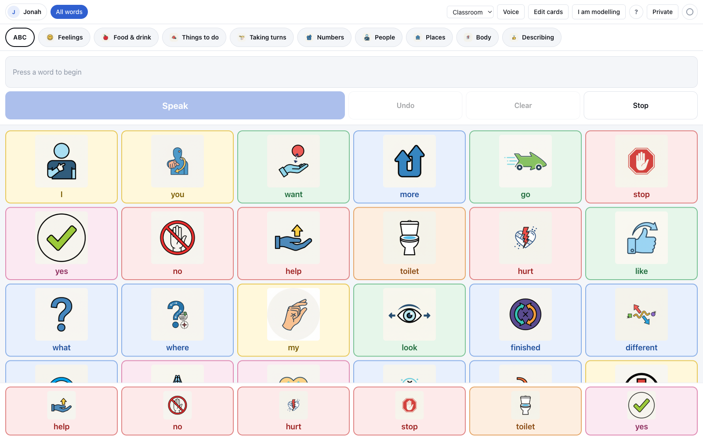
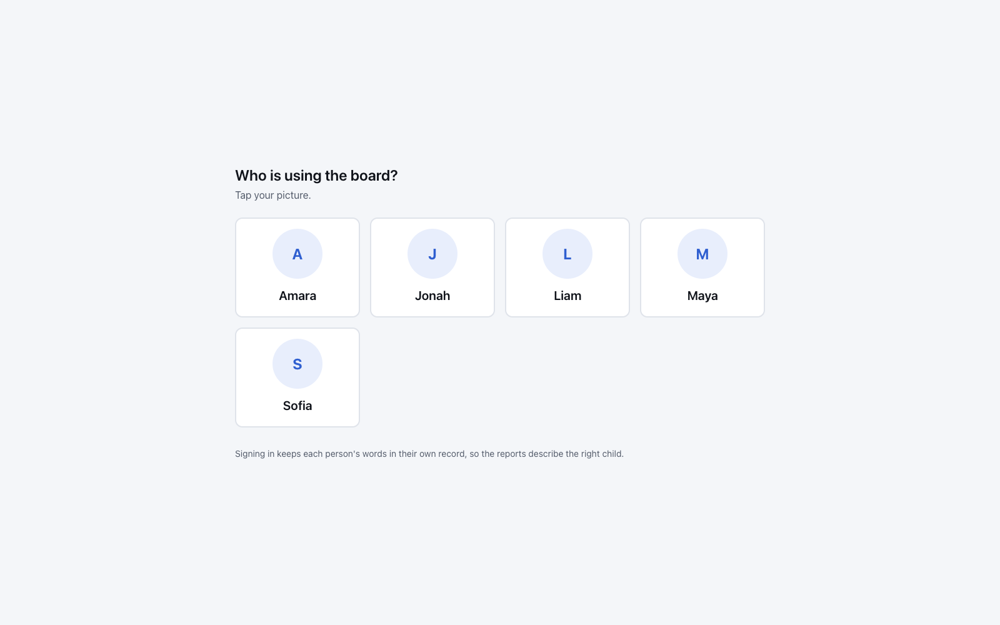
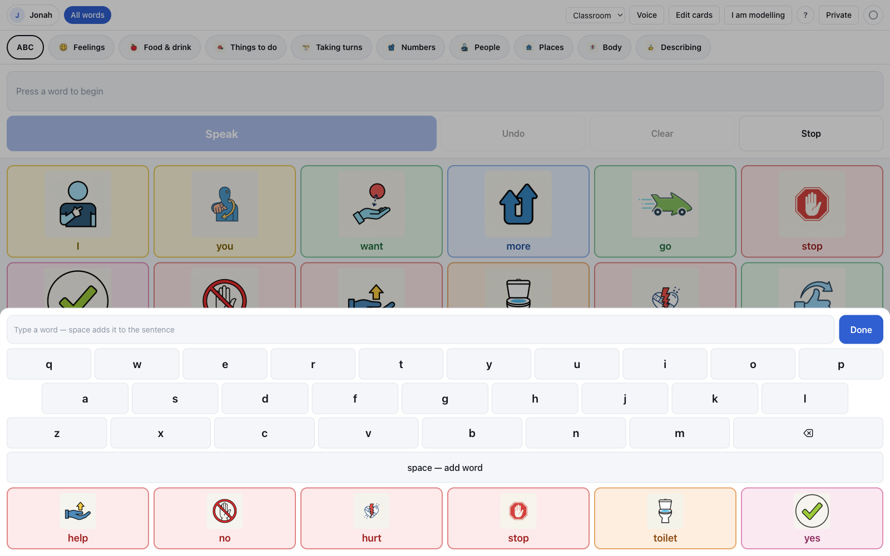
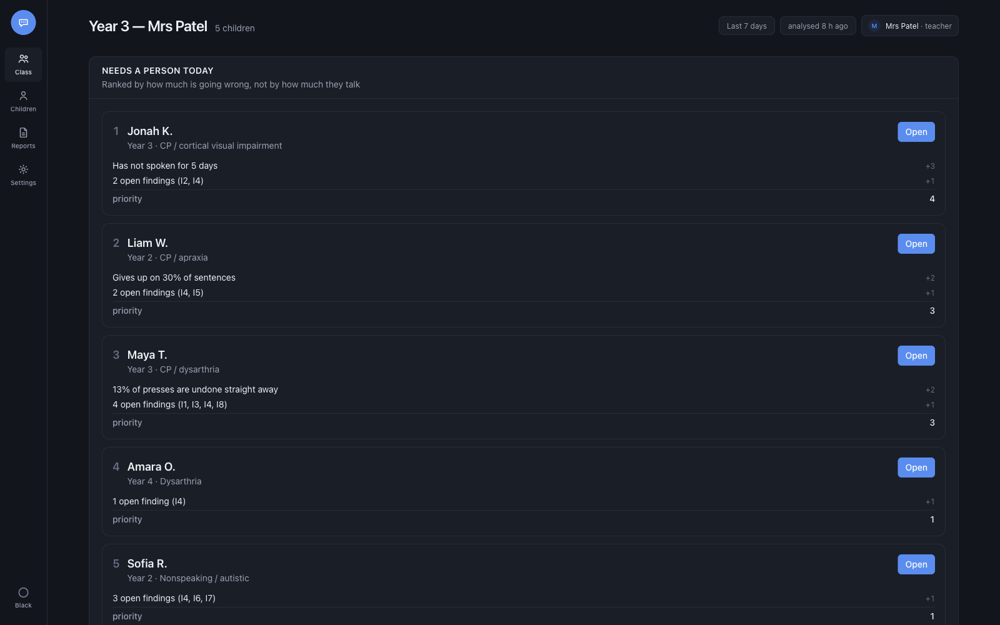
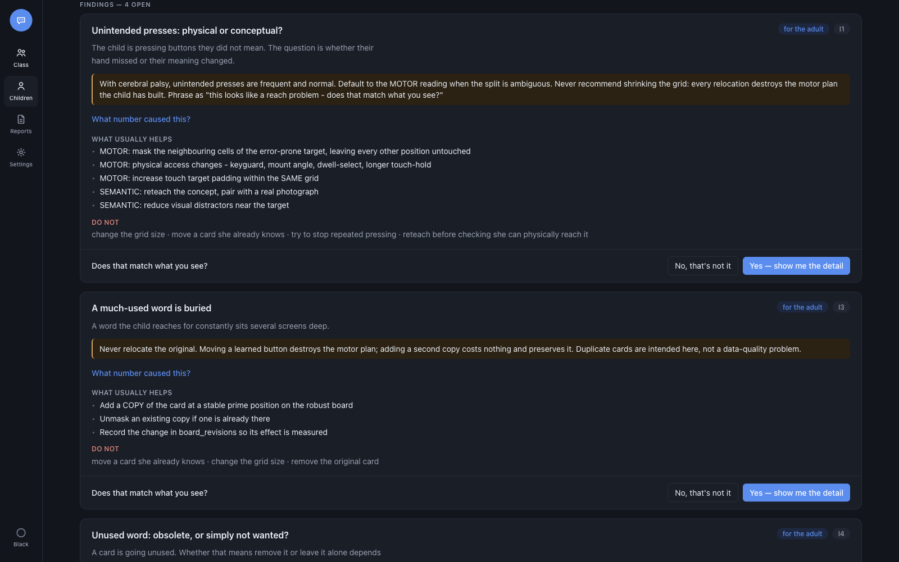
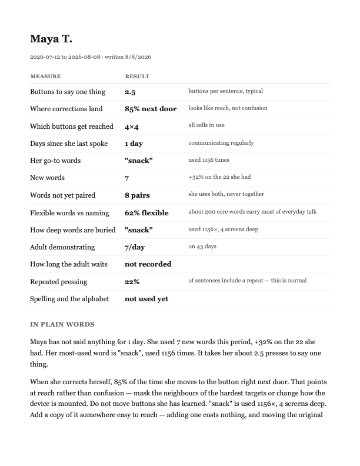
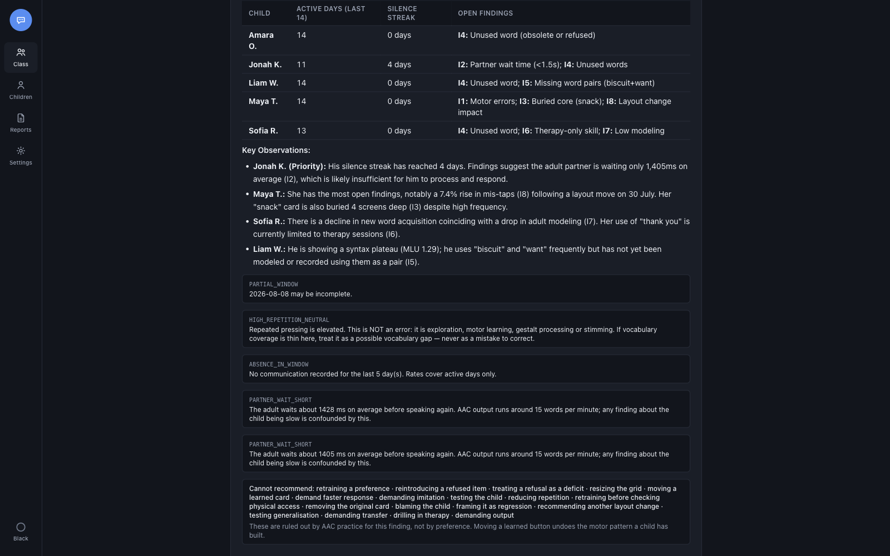
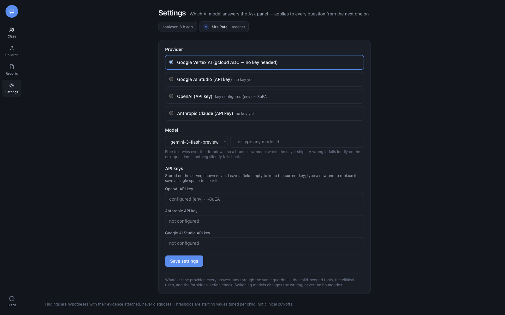

Reading the Board · AI Hackathon · live product
AAC Analytics: a symbol board for nonspeaking children, a clinical analytics dashboard for the adults around them, and an AI layer that is structurally unable to give harmful advice.
This is live — three public URLs, running right now. A communication board for nonspeaking children, an analytics dashboard for their teachers and speech therapists, and an AI layer whose clinical guardrails live in the code, not the prompt. Five minutes, four ideas.
2 · The problem
These children talk by pressing symbols. Every press is data — and today it evaporates. But here's the trap: naive analytics on this data produces actively harmful advice. Moving a child's most-used button "closer" destroys months of muscle memory. So the product question isn't "what can we show" — it's "what must we refuse to say".
3 · The child's side



The child's side is a full AAC system: 76 AI-generated symbols, a sentence bar that speaks with real grammar, picture-based sign-in, an alphabet keyboard for spellers — that's a clinical requirement, not a nice-to-have — and it's an offline PWA, because a wifi outage must never take away a child's voice. Every tap logs an event with its grid position.
4 · The unusual part
Here's what makes this project unusual. We read the AAC clinical literature and turned it into eight binding constraints that live in the schema and the query layer. The database rejects a "move this button" proposal — the AI cannot even propose it. Repetition is typed neutral, so no screen can paint stimming as a problem. A refusal finding has no action button, because a child's "no" has to count.
5 · The adult's side

The teacher's side opens with a queue, not charts: who needs a human today, and why. Jonah's on top — he hasn't spoken in five days. The findings come from plain SQL rules, deliberately not a model, so a therapist can trace every claim to a number. Every figure carries its sample size, and what isn't measured says "not recorded" — never a fake zero.
6 · Findings that argue their case


Each finding argues its case: the exact numbers, the thresholds they crossed, and — in red — what practice forbids doing about it. The human always decides: "does that match what you see?", and a "no" with a reason feeds back into the rules. The whole report exports as a real PDF, caveats included, for the IEP meeting.
7 · The AI layer


The Ask panel is a real agent: this table took eleven tool calls — five children queried in parallel. But scope is injected server-side; the model never picks whose data it reads. A guard checks every answer against the forbidden list and rewrites violations. And it's multi-provider — Gemini 3 by default, GPT or Claude with a key in Settings. Swap the brain; the guardrails stay.
8 · How it holds together
Architecture in one breath: one Next.js app serves both surfaces, split by hostname. SQLite in WAL mode — proven under a hundred thousand concurrent reads and writes. The MCP server is the single seam between the data and any model — twenty read-only tools, zero npm dependencies. And a Python pipeline rebuilds everything deterministically behind a 42-check clinical safety gate.
9 · Verified, not vibed
And we tested it like it matters. 194 feature checks with exact expected outputs. Every metric recomputed independently from raw events on a half-year cohort — the dashboard, the chatbot, and the SQL agree to the digit, 135 out of 135. A 42-check clinical gate runs on every build. Our own verification passes caught 23 bugs — including one that had been invisible since the first commit.
10 · The point
Every finding points at something a grown-up can do: wait longer, model more, add a copy, mask a neighbour. The board stays exactly where the child learned it.
Every finding in this system points at something an adult can change — wait longer, model more, add a copy. The board stays exactly where the child learned it. That's the whole idea: data that helps the adults change, so the child doesn't have to. It's live — try it. Thank you.